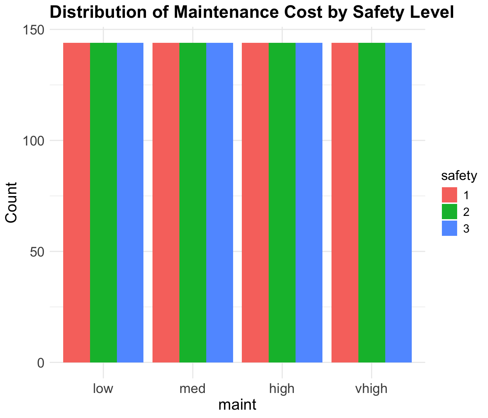

DSCI 310 Project: Group 5
1 Car Evaluation Analysis
1.1 Summary
This project analyzes the Car Evaluation Dataset from UCI Machine Learning Repository (1988), which contains 1728 with six categorical attributes: buying price, maintenance cost, number of doors, passenger capacity, luggage space, and safety rating. The dataset was clean, with no missing values or duplicates, and required ordinal encoding for machine learning analysis.
Exploratory Data Analysis (EDA) revealed balanced distributions across most features. However, the “class” variable was highly imbalanced, with “unacceptable” accounting for 1210 instances and “very good” only 65 instances. The k-Nearest Neighbors (kNN) model was trained to predict safety levels using the other features, achieving an accuracy of 44.06% with an optimal k of 19—an improvement over random guessing (33.33%) but highlighting the model’s limited predictive power.
The findings indicate that individual features do not strongly determine safety levels independently, suggesting the need for more complex models or additional variables. These results have implications for both vehicle safety assessment and methodological best practices in categorical data analysis, reinforcing the importance of feature selection and encoding techniques for machine learning applications.
1.2 Introduction
###Background:
Cars and personal transportation are an inevitable part of everyday life in the developed world. They play a crucial role in people’s daily routines, enabling them to commute to work, travel, attend social gatherings, and explore new places. However, cars also pose significant safety risks. In 2023 alone, car accidents accounted for over 40 000 fatailities (Wikipedia Contributors (2019)). Given these risks, it is no surprise that many individuals seek ways to make car travel safer while maintaining its convenience and necessity.
Research has shown that consumers are willing to invest in vehicle safety. For example, Andersson (2008) found that Swedish drivers were willing to pay a premium for improved car design and build quality to reduce the risk of injury in accidents. Additionally, design and material choices play a critical role in determining a vehicle’s safety. Nygren (1983) found that factors such as a car’s weight, seatbelt design, and headrests significantly influenced accident survivability. More recently, Richter et al. (2005) demonstrated that passive safety improvements—such as enhanced structural integrity and interior design modifications—have contributed to a measurable decline in injury rates from car accidents. These findings highlight the importance of identifying key factors that contribute to vehicle safety.
Given this context, our research project aims to answer the following question:
Can we predict the estimated safety of a car using various attributes, such as its buying price, capacity (persons), and maintenance cost?
To answer this question, we will use the Car Evaluation Dataset from UC Irvine’s Machine Learning Repository. This multivariate classification dataset contains six car design and classification variables, and includes 1728 observations. Key variables that will be central to our analysis include the car’s buying price, maintenance cost, seating capacity (in terms of the number of passengers it can accommodate), and the car’s evaluation level (categorized as unacceptable, acceptable, good, or very good).
1.3 Methods and Results
1.3.1 Data Loading
The dataset was retrieved from an online source and loaded into R for analysis using the read.csv function. This dataset contains categorical variables describing various attributes of cars, which will be used for classification.
V1 V2 V3 V4 V5 V6 V7
1 vhigh vhigh 2 2 small low unacc
2 vhigh vhigh 2 2 small med unacc
3 vhigh vhigh 2 2 small high unacc
4 vhigh vhigh 2 2 med low unacc
5 vhigh vhigh 2 2 med med unacc
6 vhigh vhigh 2 2 med high unaccAlthough the dataset comes with predefined columns, it does not include column names when we read in the CSV file. We manually assign meaningful column names based on the UCI dataset documentation. Table 2
buying maint doors persons lug_boot safety class
1 vhigh vhigh 2 2 small low unacc
2 vhigh vhigh 2 2 small med unacc
3 vhigh vhigh 2 2 small high unacc
4 vhigh vhigh 2 2 med low unacc
5 vhigh vhigh 2 2 med med unacc
6 vhigh vhigh 2 2 med high unacc1.3.2 Data Wrangling and Cleaning
Label Value
1 Number of Missing Values 0
2 Number of Duplicate Values 0Amazing! No missing values and duplicate rows. Table 3
1.3.3 Data Types
Since k-Nearest Neighbors (kNN) is a distance-based algorithm, it requires numerical input for feature comparisons. However, our dataset currently consists of categorical variables (all factors in R).
buying maint doors persons lug_boot safety class
1 4 4 2 2 1 1 1
2 4 4 2 2 1 2 1
3 4 4 2 2 1 3 1
4 4 4 2 2 2 1 1
5 4 4 2 2 2 2 1
6 4 4 2 2 2 3 1Since we converted the text into numerical variables, we have attached the description of each numerical value per feature below for reference:
buying and maint - low: 1 - med: 2 - high: 3 - vhigh: 4
doors and persons - The values are technically numerical, but they only fall into 3 or 4 categories and are not continuous.
lug_boot and safety - small/low: 1 - med: 2 - big/high: 3
class - unacc (unacceptable): 1 - acc (acceptable): 2 - good: 3 - vgood: 4
The data has been cleaned and is ready for analysis!
1.3.4 Summary of Data
buying maint doors persons lug_boot
Min. :1.00 Min. :1.00 Min. :2.00 Min. :2.000 Min. :1
1st Qu.:1.75 1st Qu.:1.75 1st Qu.:2.75 1st Qu.:2.000 1st Qu.:1
Median :2.50 Median :2.50 Median :3.50 Median :4.000 Median :2
Mean :2.50 Mean :2.50 Mean :3.50 Mean :3.667 Mean :2
3rd Qu.:3.25 3rd Qu.:3.25 3rd Qu.:4.25 3rd Qu.:5.000 3rd Qu.:3
Max. :4.00 Max. :4.00 Max. :5.00 Max. :5.000 Max. :3
safety class
Min. :1 Min. :1.000
1st Qu.:1 1st Qu.:1.000
Median :2 Median :1.000
Mean :2 Mean :1.415
3rd Qu.:3 3rd Qu.:2.000
Max. :3 Max. :4.000 # A tibble: 25 × 3
Variable Value Count
<chr> <dbl> <int>
1 buying 1 432
2 buying 2 432
3 buying 3 432
4 buying 4 432
5 class 1 1210
6 class 2 384
7 class 3 69
8 class 4 65
9 doors 2 432
10 doors 3 432
11 doors 4 432
12 doors 5 432
13 lug_boot 1 576
14 lug_boot 2 576
15 lug_boot 3 576
16 maint 1 432
17 maint 2 432
18 maint 3 432
19 maint 4 432
20 persons 2 576
21 persons 4 576
22 persons 5 576
23 safety 1 576
24 safety 2 576
25 safety 3 576Table 6 provides a clearer picture of the dataset’s distribution across categorical variables. The buying, maint, and doors features all have an even distribution, with each level appearing 432 times, suggesting a balanced dataset for these features. The safety, lug_boot and persons features are also evenly distributed across its three levels, with 576 occurrences each, ensuring no significant class imbalance in this variable. However, the class is highly imbalanced, with “unacc” (encoded as 1) making up the majority (1210 occurrences), while “vgood” (encoded as 4) is rare (only 65 occurrences). Since we are not using the class variable in our analysis, this is not much of a concern.
Our x and y variables all have sufficient data points for analysis!
1.3.5 EDA Analysis - Visualization

Histograms of Safety Across 3 Input Variables: Buying Price, Capacity (Number of Persons), and Maintenance Cost
As we saw in the summary table, all the safety levels are evenly distributed across each of the independent variables.
Initial Observations
The histograms indicate that the safety levels (Figure 1, Figure 2, and Figure 3) are evenly distributed across all three independent variables: buying price, number of persons, and maintenance cost. This suggests that the dataset is well-balanced with respect to safety levels, meaning that safety is not disproportionately concentrated in any particular category of these features. However, we do not observe significant variation is observed in the distribution of safety across these variables.
Proceeding with Analysis
While individual variables may not show a strong distinction in safety levels on their own, the interaction between multiple features could still be meaningful for classification. Just because safety is evenly distributed across each independent variable separately doesn’t mean that a combination of factors (e.g., high buying price + low maintenance + more persons) won’t reveal patterns that help predict safety levels.
1.3.6 kNN Classification Analysis
Best k found through cross-validation: 17 Best cross-validation accuracy: 47.22 %Test Set Accuracy: 46.09 %The final kNN model achieved 46.09% accuracy, which is somewhat reflective of the CV accuracy of 47.22%. This is not a great accuracy, but it’s better than random guessing, which would be 33.33%.
1.3.7 Visualization of Analysis
Since we are using multiple input variables for our kNN classification, it wouldn’t be possible to graph it out 2D. We will do a confusion matrix as our visualization.

Heatmap of Confusion Matrix for Visualization of Analysis
1.4 Discussion
1.4.1 What We Found
The analysis started with a car evaluation dataset lacking column names, which were manually assigned as “buying,” “maint,” “doors,” “persons,” “lug_boot,” “safety,” and “class” based on UCI documentation. The dataset, comprising 1728 rows, was clean with no missing values or duplicates. All variables were categorical and ordinal, necessitating ordinal encoding into numerical values for k-Nearest Neighbors (kNN) analysis. Summary statistics revealed balanced distributions across most features (e.g., “buying,” “maint,” “doors,” “lug_boot,” “safety,” and “persons”), with each category appearing 432 or 576 times. However, the “class” variable was highly imbalanced, with “unacc” dominating (1210 instances) and “vgood” rare (65 instances), though this was irrelevant as “class” was not used in the kNN analysis.
Exploratory Data Analysis (EDA) using histograms showed that “safety” levels (low, medium, high) were evenly distributed across “buying,” “persons,” and “maint,” indicating no single feature strongly distinguished safety levels independently. The kNN model, trained to predict “safety” using other features, achieved a final accuracy of 46.09% with an optimal k of 17, surpassing random guessing (33.33% for three classes) but suggesting limited predictive power. A confusion matrix heatmap visualized the model’s performance, highlighting prediction accuracies and errors across safety levels.
The dataset’s cleanliness and balanced feature distributions partially aligned with expectations, given its UCI origin, known for structured datasets. The absence of missing values and duplicates was anticipated, simplifying preprocessing. However, the uniform distribution of “safety” across individual features was unexpected. Real-world data might show biases—e.g., higher safety with lower buying prices or higher maintenance costs due to safety features—yet this dataset lacked such trends, possibly indicating synthetic balancing for algorithmic testing.
The kNN accuracy of 46.09% was lower than ideal but not surprising. The even distribution of safety and lack of strong individual predictors suggested that kNN, reliant on feature proximity, might struggle. The slight accuracy increase to 47.22% from 46.09% with tuning was expected, though the overall modest performance hinted at complex feature interactions or insufficient predictive signals, aligning with the EDA findings.
1.4.2 Potential Impact
These results have practical and methodological implications. The preprocessing and encoding workflow offers a replicable approach for handling ordinal categorical data, applicable to fields like healthcare or marketing. The balanced predictors ensure unbiased model training, making this dataset a fair benchmark for algorithmic evaluation.
However, the kNN’s 46.09% accuracy limits its utility for real-world safety prediction, such as in automotive design or consumer decisions, where higher reliability is critical. The uniform safety distribution suggests unmeasured variables or interactions influence safety, necessitating richer data or advanced models for practical use. This finding could prompt researchers to refine feature selection or engineering strategies when using distance-based methods, influencing future dataset analyses.
1.4.3 Future Questions
The analysis raises several questions for further exploration each aiming to enhance its practical and analytical value:
Incorporating Additional Car Attributes: Could adding car-specific variables—like crash test scores, manufacturing year, or brand reputation—enhance safety predictions? Expanding the dataset with real-world metrics, such as fuel efficiency, engine type (e.g., electric vs. gasoline), or historical recall data, might improve its utility for buyers or manufacturers. For instance, integrating standardized safety ratings (e.g., IIHS or NHTSA scores) could boost model accuracy beyond 46.09, while manufacturing year might highlight safety evolution, and brand reputation could reflect quality consistency. This could transform the dataset into a robust tool for practical car evaluation.
Consumer Preferences and Safety Trade-offs: How do car features like buying price or maintenance cost influence consumer perceptions of safety versus affordability? Survey data or X post analysis could reveal if buyers prioritize low-cost options over safety, guiding how manufacturers balance these factors in car design.
Environmental Impact on Car Safety: Could environmental factors, such as typical driving conditions (urban vs. rural) or climate (e.g., snowy regions), affect safety ratings in this dataset? Linking car attributes to usage contexts might show if features like luggage boot size or door count adapt to safety needs in diverse settings.
Temporal Dynamics of Car Evaluation: How would safety predictions change if the dataset tracked cars over time, such as pre- and post-safety regulation changes? A longitudinal approach could assess if older cars with fewer doors or lower safety ratings become outliers as standards evolve.
Cross-Cultural Car Evaluation: Do safety priorities differ across regions (e.g., North America vs. Europe vs. Asia), and how might this dataset adapt? Incorporating regional safety standards or car preferences (e.g., compact cars in Europe) could test its global applicability, revealing cultural influences on car evaluation.
Feature Interactions in Car Evaluation: Could combining car features like buying price and maintenance cost reveal stronger predictors of safety ratings? Exploring interaction terms (e.g., high buying price with low maintenance) might uncover patterns that influence car safety assessments more effectively, such as whether cost trade-offs correlate with safety compromises.
Alternative Models for Car Safety Prediction: Would advanced models like random forests or neural networks outperform kNN by identifying critical car features—like luggage boot size or passenger capacity—for safety prediction? These could reveal non-linear relationships, such as how larger boot sizes might indicate family-oriented designs with higher safety standards.
In conclusion, this study establishes a foundation for analyzing categorical datasets with kNN, while highlighting limitations and inspiring future research into feature engineering, model selection, and practical applicability in car evaluation contexts.
1.5 References
Andersson, H. 2008. “Willingness to Pay for Car Safety: Evidence from Sweden.” Environmental and Resource Economics 41: 579–94.
Nygren, Å. 1983. “Injuries to Car Occupants—Some Aspects of the Interior Safety of Cars: A Study of a Five-Year Material from an Insurance Company.” Acta Oto-Laryngologica 95 (sup395): 1–135.
Richter, M., H. C. Pape, D. Otte, and C. Krettek. 2005. “Improvements in Passive Car Safety Led to Decreased Injury Severity–a Comparison Between the 1970s and 1990s.” Injury 36 (4): 484–88.
UCI Machine Learning Repository. 1988. “Car Evaluation.” https://archive.ics.uci.edu/dataset/19/car+evaluation.
Wikipedia Contributors. 2019. “Motor Vehicle Fatality Rate in u.s. By Year.” Wikipedia; Wikimedia Foundation. https://en.wikipedia.org/wiki/Motor_vehicle_fatality_rate_in_U.S._by_year.